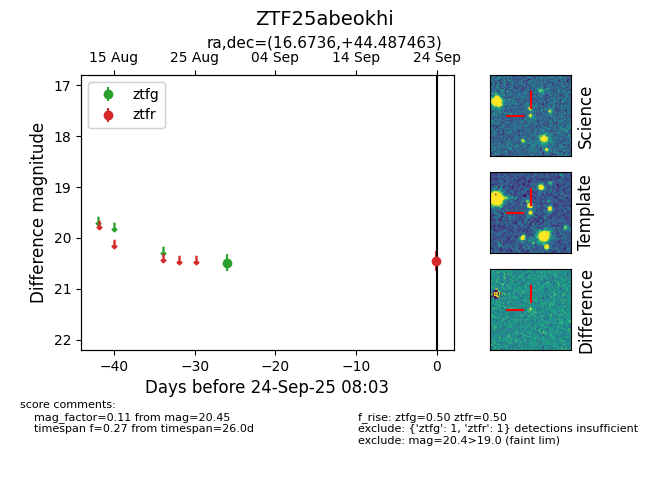

FINK: ZTF25abeokhi
Lasair: ZTF25abeokhi
ALeRCE: ZTF25abeokhi
ZTF25abeokhi (ztf,fink)
equatorial (ra, dec) = (16.6736,+44.48746)
galactic (l, b) = (125.7969,-18.29940)

last ztfg=20.49, ztfr=20.45
1 ztfg, 1 ztfr detections